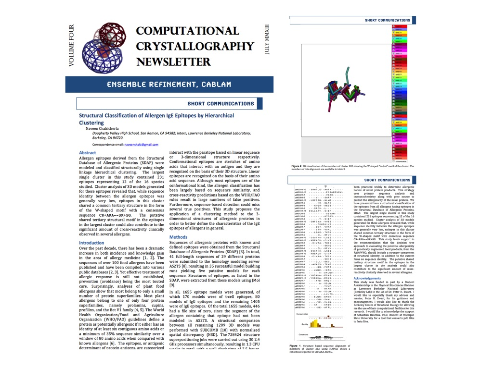

Structural Classification of Food Allergen Epitopes - The PDB To FASTA Converter in Action!
-- written by Sebastian Raschka on August 25, 2013
Tweet
Naveen Chakicherla discovered the shared tertiary structure consensus motif of an important group of allergen epitopes in his research project at Lawrence Berkeley National Laboratory. His results were reported in a research article that was published in the July 2013 issue of the Computational Crystallography Newsletter.
As Naveen writes in his article, current allergen classification and prediction is largely based on linear sequence similarity of their epitopes. To improve the general understanding of food allergens, Naveen retrieved homology models of common food allergens from different species, and by applying clustering methods based on tertiary structure similarities, he was able to identify a shared consensus motif among a large group of allergen epitopes.His intriguing results can help to improve the current allergen discovery approaches to better predict the allergenic potential in food sources.
Here, I want to thank Naveen Chakicherla for the honorable mentioning of my PDB to FASTA Converter tool in his article, which he used to convert the tertiary structure homologs back into linear FASTA files for further analyses.
I am delighted that I could contribute to his research, and I hope that his results may proof to be a valuable breakthrough to help the food industry damming back the severity of food allergies.